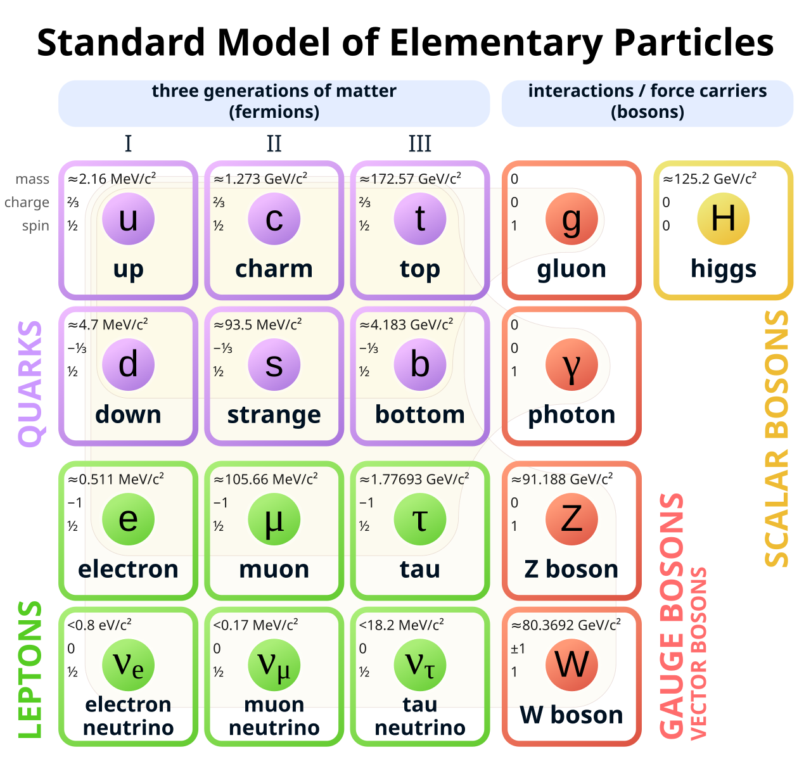
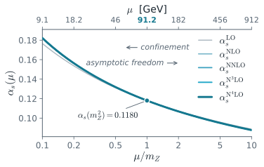
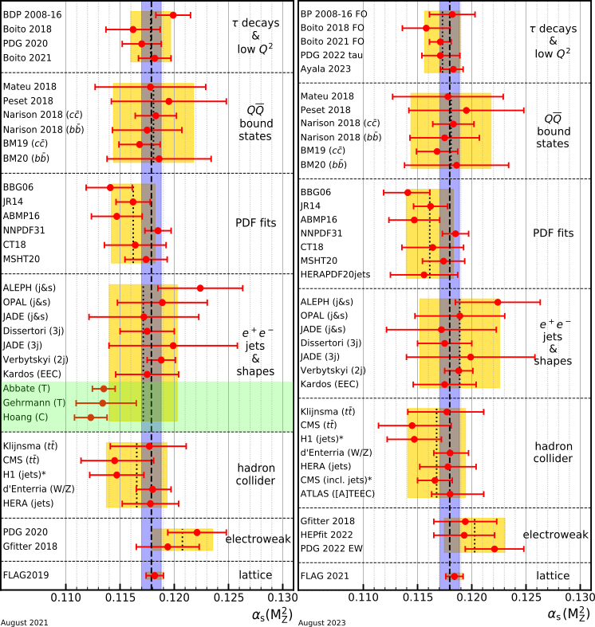

Jiahao Miao · 2 July 2026
Laurea Magistrale in Fisica
Supervisor: Prof. Giancarlo Ferrera
Co-supervisors: Prof. Ugo Giuseppe Aglietti · Dr. Wan-Li Ju
Publications: Aglietti, Ferrera, Ju, Miao, Phys. Rev. Lett. 134 (2025) 25
Aglietti, Ferrera, Ju, Miao, In preparation

A quantum field theory of the fundamental particles and their interactions — tested at colliders.


Scalar, IRC-safe functions of the final-state momenta — the geometry of energy flow, from two-jet ($y\to0$) to spherical ($y\to y_{\max}$).
$$\tau = 1 - T,\qquad T=\max_{\hat n}\frac{\sum_i|\vec p_i\cdot\hat n|}{\sum_i|\vec p_i|}$$
$$C = 3\,(\lambda_1\lambda_2+\lambda_2\lambda_3+\lambda_3\lambda_1)$$
$$\lambda_i=\mathrm{eig}\,\Theta,\qquad\Theta^{ab}=\frac{\sum_i p_i^a\,p_i^b/|\vec p_i|}{\sum_i|\vec p_i|}$$
$\Theta$: the linearised momentum tensor.
$$\frac{1}{\sigma}\frac{d\sigma}{dy}=\Big(\tfrac{\alpha_s}{2\pi}\Big)\bar A(y)+\Big(\tfrac{\alpha_s}{2\pi}\Big)^2\bar B(y)+\Big(\tfrac{\alpha_s}{2\pi}\Big)^3\bar C(y)+\mathcal{O}(\alpha_s^4)$$
Physical space, two-jet limit $y\to0$ — a tower of large logs:
$$\Sigma(y)=\frac{1}{\sigma}\int_0^{y}\!dy'\,\frac{d\sigma}{dy'}=\sum_{n=1}^{\infty}\sum_{m=0}^{2n}C_{nm}\,\alpha_s^{n}\,\ln^{m}\!\frac{1}{y}$$
double (Sudakov) logs: leading tower $\alpha_s^{n}\ln^{2n}(1/y)$, divergent as $y\to0$.
Laplace ($N$) space — they exponentiate (Catani, Trentadue, Turnock, Webber):
$$\Sigma(N)=\exp\!\Big[L\,g_1(\alpha_s L)+g_2(\alpha_s L)+\alpha_s g_3(\alpha_s L)+\cdots\Big],\quad L=\ln N$$
Organised to N4LL, then matched onto fixed order.
$$\frac{1}{\sigma}\frac{d\sigma}{d\tau}=\frac{1}{2\pi i}\int_{\mathcal C}dN\;e^{N\tau}\,\Sigma(N)$$
The Sudakov tower factorizes and exponentiates exactly only in Laplace ($N$) space. To meet the data we must return to physical $y$ — and there are two inequivalent routes:
Keep the inverse-Laplace $N$-integral; deform the contour to the left of the Landau pole $N_L$
resums $\ln N$
Expand the exponent around $\ln N=\ln\tfrac1y$ so the inversion is done term by term.
resums $\ln\tfrac1y$
We provide the first implementation of the Minimal Prescription for event-shape distributions.
We find a structural gap in the peak. — Aglietti, Ferrera, Ju, Miao, PRL 134 (2025)
$$\frac{1}{\sigma_{\mathrm{tot}}}\frac{d\sigma}{dy}=C(\alpha_s)\,\frac{d\Sigma}{dy}+D(y,\alpha_s),\qquad y=\tau,\,C$$
$$\frac{1}{\sigma}\frac{d\sigma_{\mathrm{had}}}{dy}=\int_0^{y} dy_p\; f_{\mathrm{NP}}(y-y_p)\,\frac{1}{\sigma}\frac{d\sigma_{\mathrm{pert}}}{dy_p}\qquad f_{\mathrm{NP}}(\epsilon)=\frac{1}{\sqrt{2\pi}\,\sigma_{\mathrm{NP}}}\exp\!\left[-\frac{(\epsilon-\delta_{\mathrm{NP}})^2}{2\,\sigma_{\mathrm{NP}}^2}\right]$$
Same tower, Laplace ($N$) space ($\ln\frac1y\to\ln N$):
$$\Sigma(N)=\int_0^{\infty}\!dy\,e^{-Ny}\,\frac{1}{\sigma}\frac{d\sigma}{dy}=\sum_{n=1}^{\infty}\sum_{m=0}^{2n}\bar C_{nm}\,\alpha_s^{n}\,\ln^{m}\!N$$
As $y\to0$ both factorize — matrix element:
$$|\mathcal{M}_{n+1}|^2\;\xrightarrow{\,y\to0\,}\;|\mathcal{M}_{n}|^2\,\frac{2C_F\alpha_s}{\pi}\,\frac{dk_t^2}{k_t^2}\,\frac{dz}{1-z}$$
and kinematics (additive observable):
$$y\to\sum_i y_i,\qquad\int_0^{\infty}\!\!dy\,e^{-Ny}\,\delta\!\Big(y-\sum_i y_i\Big)=\prod_i e^{-Ny_i}$$
$\Rightarrow$ convolution in $y$ becomes a product in $N$: $\Sigma(N)=\prod_i\Sigma_i(N)=\exp\!\big[\textstyle\sum_i\cdots\big]$ — the Sudakov form factor.
Two scales, $x_R\equiv\mu_R/Q$ (renormalization) and $x_Q\equiv\mu_Q/Q$ (resummation), $\mu_R,\mu_Q\in[Q/2,2Q]$, $Q=m_Z$. The resummation scale enters through a log substitution on the resummation variable $\lambda=\alpha_s b_0 L$:
$$L=\ln N\;\longrightarrow\;\ln\frac{N}{x_Q}=L-\ln x_Q,\qquad\lambda\;\longrightarrow\;\lambda-\alpha_s b_0\ln x_Q$$
The modified logarithm (CTTW) carries the same scale and vanishes at the endpoint $\tau_{\max}$, normalising the spectrum:
$$\ln\frac1\tau\;\longrightarrow\;\widetilde L(x_Q)=\ln\!\Big(\frac{1}{x_Q\,\tau}-\frac{1}{x_Q\,\tau_{\max}}+1\Big),\qquad\widetilde L\big|_{\tau=\tau_{\max}}=0$$
Seven-point envelope — scan each scale, drop the anti-correlated corners where the logs add coherently:
$$x_R,\,x_Q\in\{\tfrac12,1,2\},\qquad\frac{x_R}{x_Q}\in\{\tfrac14,4\}\ \text{dropped}\;\Rightarrow\;7\ \text{points}$$
The band is the spread of the survivors; it narrows NLL $\to$ N$^4$LL.